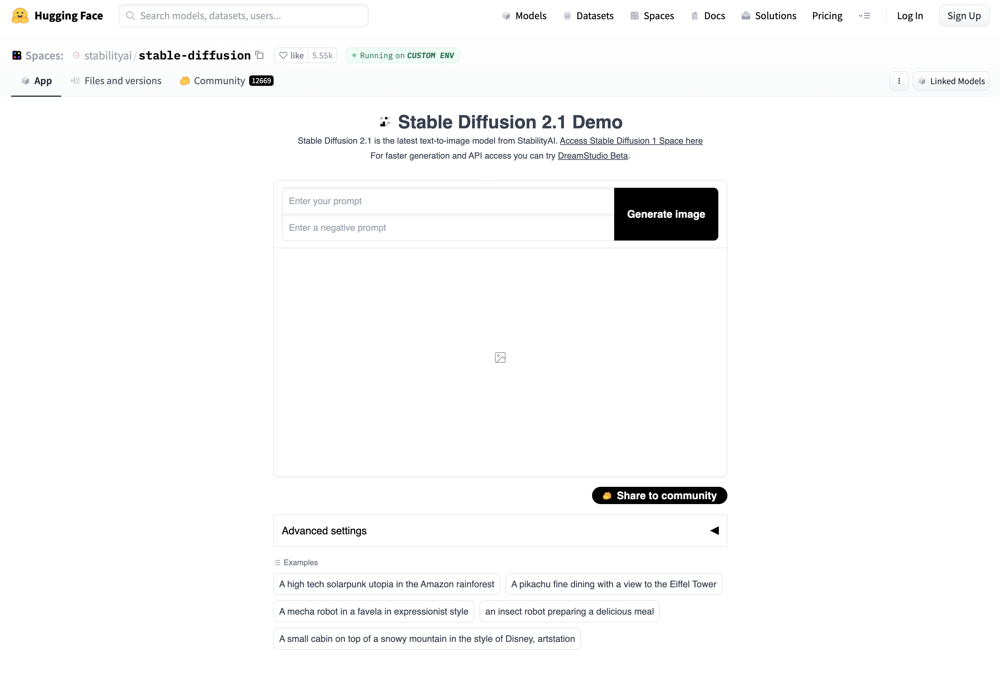

The controversy between AI generated images and art created by human artists centers around the question of creativity and originality. Some argue that AI algorithms can generate images that are just as original and aesthetically pleasing as those created by humans, while others believe that the lack of conscious intention behind AI generated images makes them inferior to traditional art forms. Proponents of AI generated images argue that the algorithms used by AI systems are capable of producing new and unexpected outcomes that can challenge conventional ideas about art and beauty. On the other hand, critics argue that AI generated images lack the emotional depth and personal touch that are integral to true art. The debate is ongoing and will likely continue as AI technology improves and becomes more widespread in the art world. Apart for the ethical dilemma it is also important to account for the economical side since AI generated images have a lot of potential for making money, as they can be used for a variety of purposes such as product design, visual marketing, and creating digital content.

1. DALL-E
2. Stable Diffusion
3. Mid journey
...
DALL-E and DALL-E 2 are deep learning models developed by OpenAI to generate digital images from natural language descriptions, called "prompts".
DALL·E is a 12-billion parameter version of GPT-3 trained to generate images from text descriptions, using a dataset of text–image pairs

Hugging Face, Inc. is an American company that develops tools for building applications using machine learning. It is most notable for its Transformers library built for natural language processing applications and its platform that allows users to share machine learning models and datasets.

Midjourney is an independent research lab that produces an artificial intelligence program under the same name that creates images from textual descriptions.
Midjourney is currently only accessible through a Discord bot on their official Discord, by direct messaging the bot, or by inviting the bot to a third party server. To generate images, users use the /imagine command and type in a prompt; the bot then returns an image. Midjourney is also working on a web interface.
AI generated images can be used for various purposes, including:
1. Visual content creation: AI generated images can be used to create visual content for marketing, advertising, and social media.
2. Data augmentation: AI generated images can be used to increase the size of the training data for computer vision and image classification tasks.
3. Concept visualization: AI generated images can be used to visualize and communicate complex concepts, such as scientific concepts, architectural designs, and product prototypes.
4. Artistic expression: AI generated images can be used as a tool for artists to create new forms of digital art.
5. Animation and special effects: AI generated images can be used to create animations and special effects for film, television, and video games.